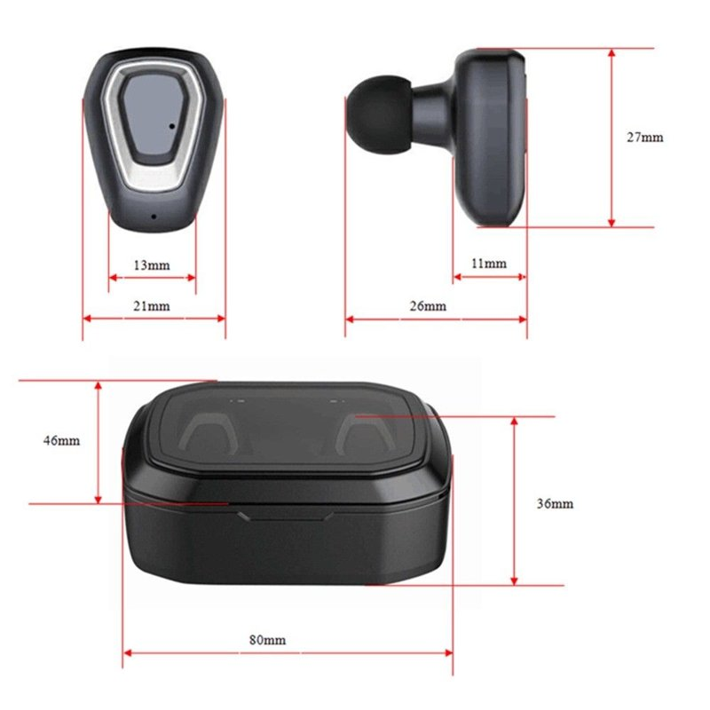

Welcome to belaidės ausinės
Ausinės virš 200 modelių | žymiausi gamintojai | salonas ir e. parduotuvė
2020.10.30 03:23
Turite klausimų? +370 698 34349 Menu Ieškoti Pirkėjo paskyra Palyginti Cart Jūsų krepšelis tuščias. Palyginti Neturite prekių palyginimui.
Pirkėjo paskyra Įsimintos prekės Prisijungti Menu Namų garso aparatūra Garso kolonėlės Nešiojamos belaidės Bluetooth Montuojamos instaliacinės garso kolonėlės Garso stiprintuvai Grotuvai Blu-Ray grotuvai Ausinės belaidės Bluetooth ir laidinės | žymiausi gamintojai Garso kolonėlių laidai ir audio sistemų priedai Komplektai Bevieliai Garso įrenginiai Namų kino sistemos Soundbar-as Multi-Room DJ garso technika Patefonai Automobilių garso aparatūra Garso kolonėlės garsiakalbiai automobiliui Aukštų dažnių Automobiliniai garso stiprintuvai Garso kolonėlių ir kiti laidai | Priedai garso instaliacijai Automagnetolos Žemų dažnių garsiakalbiai automobiliui Komplektai Vaizdo registratoriai GARSO IZOLIACIJA Akcijos Gamintojai Yamaha Denon Onkyo Pioneer Marantz Harman Kardon Bose Sonos Dynaudio Klipsch Dynavoice Focal Alpine Ground Zero Hertz Morel Proson Audison JBL Jamo Heos Mark Levinson Dali Helix Monster Cambridge Audio Brax Thule Audio Canton Wilson Rega Bowers Wilkins Grado Wharfedale Audio-Technica Tannoy AKG In-Akustik Behringer Castle Mission Cabasse Neoline NAIM Monitor Audio Technics NOISE PROTECTION SoundMAGIC Marantz Professional Revel Pro-Ject Apie mus Apmokėjimas Pristatymas Blog'as Kontaktai Pirmas Namų garso aparatūra Ausinės belaidės Bluetooth ir laidinės | žymiausi gamintojai
Ausinės belaidės Bluetooth ir laidinės | žymiausi gamintojai
Belaidės bluetooth✅ausinės JBL, BOSE, Grado, Audio Technica, AKG, Denon, Klipsch, Focal, B&W, B&O, Pioneer, Monster, Grado, Harman Kardon, SoundMAGIC ... taip pat laidinės.
Įrašai 1 yra 36 iš 311 viso
Rūšiuoti pagal Pozicija Pavadinimas Kaina Gamintojas Rodyti 12 24 36 per puslapįŽiūrėti kaip:
Puslapis: 1 2 3 4 5 AkcijaJBL T110 Purebass ausinės laidinės su mikrofonu JBL firminis Pure Bass garsas, juodos, baltos ir mėlynos
Sena kaina: 15,99 €
Speciali kaina 9,99 €
UžsakytiSoundMAGIC ES18 ausinės izoliuojančios ausinės su 1,2m laidu ir 3,5mm jngtimi | AudioVideo.lt
15,00 € UžsakytiSoundMAGIC MP21 In Ear Ausinės su mikrofonu ir HTC BlackBerry iPhone IPod valdymu | AudioVideo.lt
25,00 € UžsakytiAudio-Technica ATH-SPORT10 Ausinės jautrumas 105 dB/mW dažnių juosta 20 - 20,000 H draiveris 8.8mm | AudioVideo
25,00 € UžsakytiAudio-Technica ATH-SPORT1 SonicSport® In-ear ausinės 20 - 23,000 Hz 8.5 mm 100 dB/mW IPX5 | AudioVideo
25,99 € UžsakytiNumark HF125 Porfesionalios DJ ausinės | AudioVideo
29,00 € UžsakytiPioneer SE-M531 uždaro tipo dinaminės ausinės
34,99 € Užsakyti AkcijaJBL Tune 500BT belaidės bluetooth ausinės grojimo laikas 16 val. krovimosi laikas 2 val. Bleutooth profiliai BT 4.1
0 Apžvalga(os)Sena kaina: 59,99 €
Speciali kaina 36,50 €
UžsakytiAudio-Technica ATH-AX1iS SonicFuel® Ausinės išmaniesiems telefonams dažnių juosta 15 - 22,000 Hz jautrumas 100 dB/mW | Nemokamas Pristatymas
38,99 € UžsakytiAudio-Technica ATH-AVC200 Uždaros dinaminės ausinės Max išėjimo lygis 500mW dažnių juosta 20 - 22,000 Hz varža 40 omų | Nemokamas Pristaymas
39,00 € UžsakytiJBL ausinių įkrovimo dėklas baterijos tipas 400mAH baterijos veikimo laikas 16 val | AudioVideo
39,99 € UžsakytiJBL TUNE 500 Ausinės su JBL Pure Bass Sound įmontuotu mikrofonu dažnių juosta 20 Hz - 20 kHz | AudioVideo
39,99 € UžsakytiNumark HF150 Sulankstomos DJ Ausinės 6,3 mm adapteris, dažnių juosta 20 Hz - 20 kHz, agresyvi garso izoliacija slopinanti pašalinius garsus | Nemokamas Pristatymas
39,99 € UžsakytiAudio-Technica ATH-SPORT2 SonicSport® In-ear ausinės 15 - 24,000 Hz 100 mW 100 dB/mW | Nemokamas Pristatymas
39,99 € UžsakytiUrbanista BERLIN Belaidės In-Ear tipo Ausinės grojimo laikas - 4.5 val. - krovimosi laikas - 1.5 val., dažnių juosta: 2.4GHz-2.48GHz, jautrumas: 103dB+/-3dB | Nemokamas Pristatymas
39,99 € Užsakyti AkcijaPioneer SE-MS5T Hi-Res Style Series ausinės su mikrofonu dažnių juosta 9 Hz - 40,000 Hz jautrumas 96 dB 1,000 mW |
Sena kaina: 59,00 €
Speciali kaina 45,00 €
UžsakytiSOUNDMAGIC ES20BT IN-EAR BELAIDĖS AUSINĖS Bleutooth, akumuliatoriaus veikimo laikas 5 val. jautrumas 107 dB | Nemokamas Pristatymas
45,00 € UžsakytiSoundMAGIC P21 ausinės su dėkliuku | Nemokamas Pristatymas
45,00 € UžsakytiSoundMAGIC E30 ausinės su 1,2 m sintetiniu laidu ir 3,5mm jungtimi | Nemokamas Pristatymas
46,00 € Užsakyti AkcijaAudio-Technica ATH-M20x ausinės dažnių juosta 15 - 20,000 Hz įėjimo galia 700 mW at 1 kHz jautrumas 96 dB | Nemokamas Pristatymas
Sena kaina: 69,00 €
Speciali kaina 48,99 €
Užsakyti AkcijaJBL Reflect Mini sportinės Į ausis įstatomos ausinės juodos, raudonos, žalsvos arba mėlynos | nemokamas pristatymas
1 Apžvalga(os)Sena kaina: 70,00 €
Speciali kaina 48,99 €
UžsakytiJBL TUNE 205BT Belaidės ausinės jautrumas 100dB SPL/1mw krovimosi laikas 2val grojimo/kalbėjimo laikas 6 val | Nemokamas Pristatymas
49,00 € UžsakytiJBL T460BT belaidės Bleutooth ausinės JBL Pure Bass 11 val grojimo laikas valdymo mygtukai | Nemokamas Pristatymas
49,00 € UžsakytiJBL Endurance SPRINT Sportines beleidės bluetooth ausinės 8 val grojimas TwistLock Greitas įkrovimas valdymo funkcijos | Nemokamas Pristatymas
1 Apžvalga(os) 49,00 € UžsakytiPioneer SE-C7BT belaidės ausinės dažnių juosta 5 Hz–22 kHz AAC palaikymas 7 val grojimas ir 1.5 val įkrovimo laikas | Nemokamas Pristatymas
49,00 € UžsakytiPioneer SE-MJ722T-K uždaro tipo dinaminės ausinės
49,90 € UžsakytiJBL TUNE 115BT Belaidės In-Ear Tipo Ausinės grojimo laikas 8 val. - įkrovimo laikas 2 val. jautrumas 102dB SPL/1kHZ 1mW, varža 16Ω | Nemokamas Pristatymas
49,99 € UžsakytiJBL Endurance RUN ausinės Dažnių juosta - 20Hz - 20kHz Fliphook TwistLock™ ir FlexSoft™ technologijos atsparios prakaitui | AudioVideo
49,99 € UžsakytiUrbanista MADRID Belaidės In-Ear tipo Ausinės grojimo laikas - 4 val. - krovimosi laikas - 1.5 val. dažnių juosta: 2.4GHz-2.48GHz, jautrumas: 102dB+/-3dB | Nemokamas Pristatymas
49,99 € Užsakyti AkcijaPioneer SE-MJ553BT belaidės Bleutooth ausinės išmaniesiems telefonams tinka Android, Apple ir MS Windows telefonams dažnių juosta 10 - 22,000 Hz 40 mm | Nemokamas Pristatymas
Sena kaina: 79,00 €
Speciali kaina 52,00 €
Užsakyti AkcijaPioneer SE-CH5T Hi-Res ausinės dažnių juosta 8 Hz–45 kHz jautrumas 108 dB 100 mW | Nemokamas Pristatymas
Sena kaina: 79,00 €
Speciali kaina 52,00 €
Užsakyti AkcijaPioneer SE-MJ561BT Bleutooth ausinės su aliuminio korpusu skirtos išmaniesiems telefonams Android, APple įrenginiams bei MS Windows | Nemokamas Pristatymas
Sena kaina: 75,00 €
Speciali kaina 55,00 €
UžsakytiSoundMAGIC E10C In Ear garsus pašalinius izoliuojančios ausinės su mikrofono ir valdymu nuo laido | Nemokamas Pristatymas
55,00 € UžsakytiJBL E10 Į ausis įstatomos ausinės
56,00 € UžsakytiAudio-Technica ATH-CKR35BT Sound Reality Belaidės ausinės Bleutooth 5 – 24,000 Hz 102 dB/mW | Nemokamas Pristatymas
59,00 € UžsakytiAudio Technica ATH-C200BT Bleutooth Ausinės 9 val grojimo laikas jautrumas 108.5 dB/mW dažnių juosta 20 iki 20,000 | Nemokamas Pristatymas
59,00 € UžsakytiĮrašai 1 yra 36 iš 311 viso
Rūšiuoti pagal Pozicija Pavadinimas Kaina Gamintojas Rodyti 12 24 36 per puslapįŽiūrėti kaip:
Puslapis: 1 2 3 4 5 xKaina: Actual Price: Our price is lower than the manufacturer's minimum advertised price. As a result, we cannot show you the price in catalog or the product page.
You have no obligation to purchase the product once you know the price. You can simply remove the item from your cart. Our price is lower than the manufacturer's minimum advertised price. As a result, we cannot show you the price in catalog or the product page.
You have no obligation to purchase the product once you know the price. You can simply remove the item from your cart. Filtruoti pagal
Filtras
Gamintojas Audio Technica (65) B&O Play (17) Bose (17) Bowers Wilkins (7) Dali (2) Denon (21) FiiO (1) Focal (8) Grado (13) Harman Kardon (6) JBL (53) JVC (1) KEF (3) Klipsch (20) Monster (4) NAD (1) Numark (4) Oppo (3) Pioneer (28) Pro-Ject (2) Sony (1) SoundMAGIC (16) Technics (1) URBANISTA (16) Kaina 0,00 € - 999,99 € (295) 1 000,00 € - 1 999,99 € (13) 2 000,00 € - 2 999,99 € (1) 3 000,00 € - 3 999,99 € (1) 4 000,00 € ir daugiau (1) Spalva Balta (5) Juoda (9) Mėlyna (5) Pilka (2) Raudona (3) Vyšnia (2)Apie AudioVideo.lt
Jau 21 metus firma Muzikis Garažas specializuojasi garso aparatūros ir namų sistemų projektavime prekyboje ir instaliacijoje. Vertiname sprendimų paprastumą, patogų valdymą, pritaikymą prie patalpos interjero, racionalumą. Kiekvieną savo projektą įgyvendiname kruopščiai ir atsakingai iki pilno klientų lūkesčių patenkinimo. Didžiausias garso ir audio aparatūros salonas ir e. parduotuvė. Esame vieninteliai ir oficialūs garso aparatūros lyderių kaip Dynaudio, Dynavoice, Ground Zero, Hertz, Audison, Helix, Brax, Morel, Focal atstovai Lietuvoje. Esame oficialūs dyleriai prekinių ženklų JBL, Yamaha, Pioneer, Bose, Dali, Denon, Harman/Kardon, Marantz, Rega, Pro-Ject, Mission, Monitor Audio, Wharfedale, Teac, Heos, Jamo, Revel, Sonos, Cambridge Audio, Magnat, Alpine, AKG, Monster, Behringer, Mark Levinson, NAD, Bang & Olufsen. Prekes galima užsisakyti telefonu, e. paštu arba internetu. Prekių pristatymas 0 - 3 darbo dienos. Nemokamas pristatymas užsakymui didesniam negu 50 Eur. Geriausios kainos garantija - kreipkitės pasiūlysime geriausią kainą rinkoje Jūsų pasirinktam produktui. Prekiaujame tik nauja, originalia technika su gamintojo garantija . Atsiskaitymas grynaisiais kurjeriui arba salone grynais/kortele, banko pavedimu, paypal arba išsimokėtinai Mokilizingas , General Financing arba ŠB lizingas .Tax Free
Tax Free pirkimo sąlygos skirtos www.audiovideo.lt klijentams | возврат НДС | Tax Free for home audio
Kontaktai
Firma "Muzikinis garažas"
Į.k. 135552995
Pvm kodas: LT355529917
Armatūrininkų g. 1, Kaunas 52373, Lietuva
info@audiovideo.lt
Darbo laikas I-V nuo 9.00 iki 18.00 Val.
Šeštadienį - iš anksto susitarus.
Aukščiausios klasės ekspertų kosultacijos,
visada laukiame Jūsų skambučio:
+370 698 34349
Susisiekite su mumis per FB Messenger
Socialiniai tinklai
Automobilių garso aparatūra
Automobiliniai garsiakalbiai Žemo dažnio garsiakalbiai automobiliams Magnetolos Automobiliniai graso stiprintuvai Automobiliniai graso tech. komplektai Priedai instaliacinės medžiagos Garso ir vibro izoliacija Vaizdo registratoriai radarų detektoriaiNamų garso aparatūra
Garso kolonėlės Ausinės Grotuvai Garso siprintuvai resyveriai Multi-room garso technika Namų kino komplektai Garso technikos komplektai Bevieliai garso įrenginiai Soundbar-ai Laidai ir priedaiAutomobilių garso aparatūros gamintojai
Alpine Pioneer JBL Hertz Audison Ground Zero Helix Morel Dynaudio FocalNamų garso aparatūros gamintojai
Yamaha Denon Onkyo Pioneer Harman/Kardon Marantz JBL Dynaudio Dali Dynavoice © 2020 Muzikinis Garažas jau 21-metus esame Lietuvos garso technikos rinkos lyderis